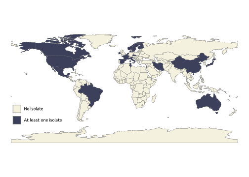
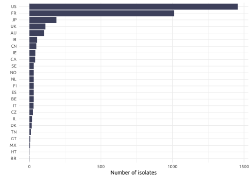
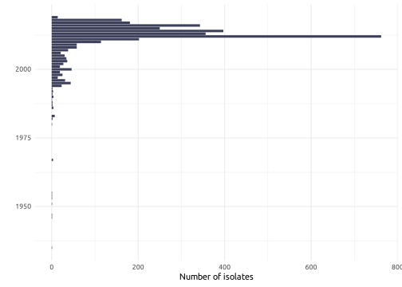
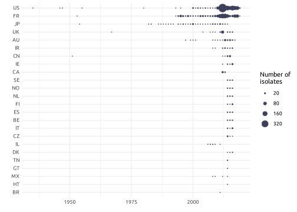
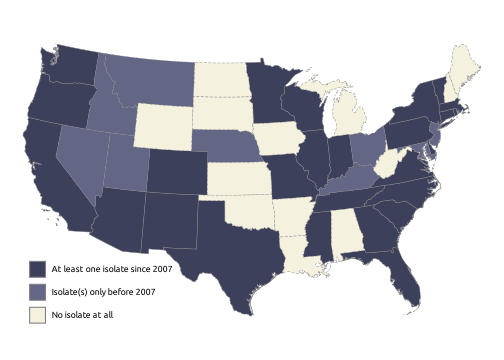

The data I use for my analysis has been published in Lefrancq et
al. (2022). The dataset was originally published in .xlsx
format. I manually cleaned it and converted to the .txt
format to simplify its use. After that, I still had some
cleaning/filtering to do using R directly.
The first step was obviously to load the data set into R.
data_prn <- read.table("data/data-lefrancq-2022.txt", header = T, sep = "\t")The map below shows the geographical distribution of the isolates. We can see that most countries with isolates come from North American or European countries.

The data set consists in 3344 isolates, gathered from 24 between 1935 and 2019. Now, there is an enormous heterogeneity between countries regarding the number of isolates provided to the data set, as shown below.

We can see that the two dominant countries, the United States (US) and France (FR), represent together 73.8 % of all the isolates. Thus, most countries in the data set cannot be studied the way we plan as there is too few data.
There also is a high heterogeneity in the period of isolation, as shown below.

We can observe that most of the isolates (79.75) %) have been sampled after 2010. This means that our analyzes will have to be lead on short time spans (hardly more than two decades, or even less depending on the analysis).
The figure below summarizes the data shown in the two previous figures.

We decided to focus on the isolates coming from the United States for three reasons:
We isolate the american strains this way:
data_prn <- data_prn[data_prn$country == "US", ]Now, the data set has been reduced to 1457 isolates gathered between 1935 and 2019. From there, we decided to lead an analysis on the temporal spread of PRN-deficient strains. PRN, or pertactin, is a surface protein found in most Bordetella pertussis strains. As an antigen, it is part of most of the ACellular Vaccines (ACV) used against pertussis. These vaccines create selective pressures thought to favorize strains lacking PRN, called PRN-deficient or PRN- strains (opposed to PRN-producing or PRN+ strains).
The dataset had thus to be filtered to only keep records from which we dispose of three information:
This filtering is simply done by removing rows lacking at least one of these information.
data_prn <- na.omit(data_prn[, c("year_isolated", "region", "prn_def")])This filtering reduces our data set to 1367 rows. We only need to keep the data starting from the year of the first occurrence of a PRN- in the United States which is the year 2007.
data_prn <- data_prn[data_prn$year_isolated >= min(data_prn$year_isolated[data_prn$prn_def == "-"]), ] From there, we have our final data set, composed of 1302 rows. In the data set, we have the state of origin of our isolates. This will be useful in our analyzes, but before we can proceed we must do some formatting: we must convert the full-length names of the states to their postal code. This is needed to assure that everything matches in the future analyzes.
data_prn$region[data_prn$region == "New York State"] <- "New York"
data_prn$region[data_prn$region == "Washington State"] <- "Washington"
states_names <- read.table("data/states-names.txt", h = T, sep = "\t")
for (name in states_names$long) {
data_prn$region[data_prn$region == name] <- states_names$short[states_names$long == name]
}The figure below shows which states have been sampled for B. pertussis isolates. We see that there are no isolates coming from a few states. Note that because a state has not been sampled does not mean the state did not reported pertussis cases. The reasons of this heterogeneity in the distribution of the isolates is not known. We can also see that a few states did report some isolates, but only before the period that our study focuses on.

As mentioned earlier, our analysis of the American data set will rely on the availability of a lower level of geographical distribution of the isolates, which is their state of origin. We also said that we will focus in a first time on the spread of PRN- strains. The figure below shows the distribution of the isolates per state and per year, as well as the proportion of PRN- strains.